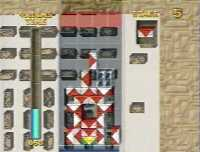

|


Review
Game Type: 2D Puzzle
Follows the ages-old Tetris formula very closely. Pieces drop down the screen and you must make them disappear before the screen fills. Each piece is marked with half a diamond pattern in red and white, and the goal is to link them up with other pieces to make whole diamonds of the same color. Clear the entire board and you will advance to the next round.
Gameplay: 50/100
I do have to give the creator credit; coming up with the concept for this game took genius on the level of Pazhitnov's. But while the idea must have looked great on paper, in an actual game it will put most players to sleep. Placing each piece takes a bit of planning, and as a result the game moves pretty slow. Not for Puzzle Fighter fans. There is so little risk of the screen actually filling up to the top that a timer is included, which can only be replenished by setting off chain reactions.
The control leaves much to be desired. Pressing left or right sends a piece racing to the opposite side of the field at breakneck speed. Accurate placement is further hampered by the height of the playfield. You may think you have a piece in the column you want but when you drop it you may find it's one space to the side. Pieces can still be moved and rotated for a second after they've touched down, which may sound good, but it's too easy to accidentally move the piece you've just placed when you thought you were in control of the next piece. At least they didn't make the grave mistake of abandoning all control of a piece the instant you press Down.
Graphics: 50/100
The sides and top of the blocks are always visible, which is probably supposed to aid in visualizing how they link together. It proves rather distracting, though. I don't really like the red and white color scheme but that may be just personal preference. The rendered backgrounds show you advancing through mystical ruins. They change with each round and look really nice.
Sound: 50/100
As might be expected from a puzzle game there isn't much variety in sound effects, but the quality is decent. Effects tend to come only from the left or right speaker depending on where you place a piece, which is very distracting. The ambient music is semi-relaxing. (Non-swap friendly.)
Overall: 50/100
I get more into the sensual assault puzzle games like Klax and Tetris Attack. Vadims was just too slow-paced for me. If the more recnt puzzle games are too fast for you and you'd like time to sit back and strategize a bit, it may be perfect for you. You may want to wait for a better version than the Playstation's, though, as I'm sure this game can be done better.
|